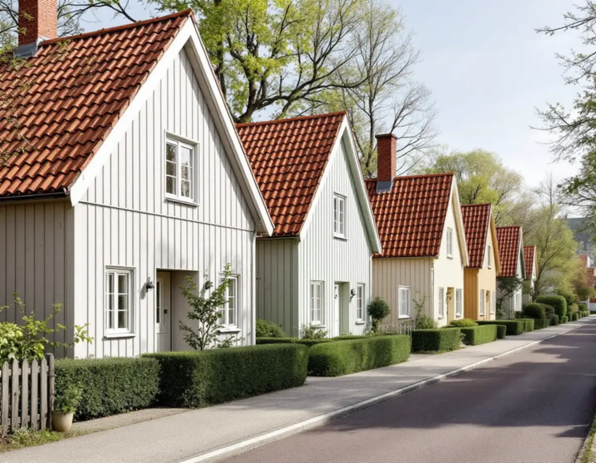
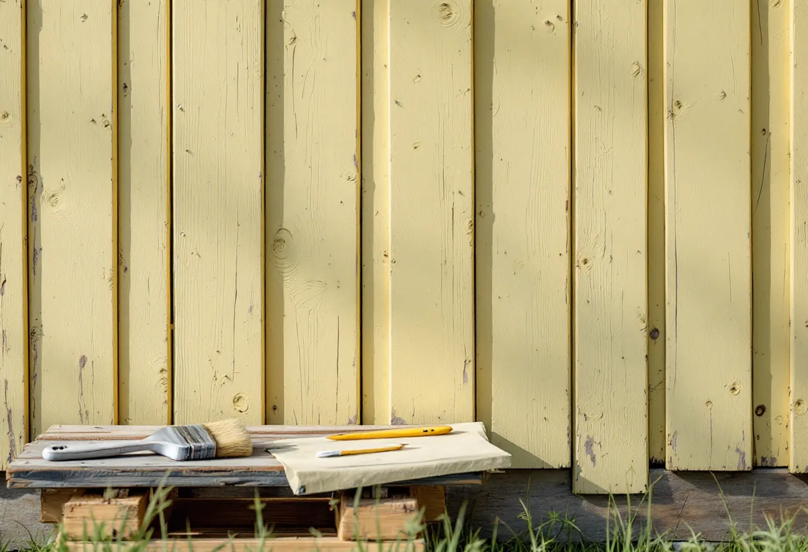

Platsbesök
Vi tittar på lockpanel, puts, fönster och dörrar och ser vilken kulör och färgtyp som sitter på.
Farsta är mer än centrumet från 1960. I stadsdelsområdet ligger Söderorts största småstugeområde, där närmare tusen trähus byggdes med ägarnas eget arbete som insats. Geal Entreprenad AB målar fasader, fönster och interiörer i Tallkrogen, Svedmyra, Sköndal, Gubbängen och övriga Farsta, med gratis platsbesök och skriftligt kostnadsförslag.

Stadsmuseets skrift om Tallkrogen berättar att utbyggnaden började 1933 och att området blev det största småstugeområdet i Söderort. Närmare 1 000 småstugor växte upp på den flacka åkermarken under det följande decenniet. Vid en första anblick ser det ut som samma stuga upprepad, men det finns mer än tio olika hustyper.
Småstugan lanserades i slutet av 1920-talet för mindre bemedlade. Kontantinsatsen ersattes med eget arbete, staden gav förmånliga lån och byggnadsdelarna levererades färdiga från fabriken. Gatorna är utlagda som löparbanor runt en idrottsarena och heter till exempel Kulstötarvägen, Maratonvägen och Olympiavägen.
Enligt stadens områdesfakta för 2025 fanns 945 bostäder i småhus i Tallkrogen, och 941 av dem var äganderätter. Varje stuga har alltså sin egen ägare, men området är byggt för att se enhetligt ut.

Stockholms stads vägledning för småhusområden beskriver att småstugornas fasader var av stående träpanel med tunn lockläkt och att färgsättningen från början var strikt reglerad till ett fåtal kulörer, ofta ljusa nyanser av grått, grönt och gult. Rödfärg fick användas efter särskild ansökan. Vägledningen markerar Tallkrogen, delar av Svedmyra och delar av Sköndal som kulturhistoriskt värdefulla miljöer.
Lockpanel har många kanter. Varje läkt har två sidor och en framkant som ska täckas, och det är i skarven mellan läkt och bräda som vatten och smuts samlas. Vi tvättar, skrapar bort lös färg längs läkterna och slår i spikar som har krupit upp, så att de inte syns genom den nya färgen.
Vägledningen råder att ta tillvara eller återskapa karaktärsskapande material, kulörer och detaljer, och påpekar att den enskilda byggnaden har stor påverkan på hela kvarterets karaktär. En ny stark kulör på en stuga i en grupp med ljusa hus syns därför mer än man tror.
Svedmyra byggdes ut med småstugor med början 1931–33. Stadsmuseet beskriver hur väggar och takstolar lyftes på plats i stora element för att göra bygget billigare, och hur Småstugebyrån gav både instruktioner och byggmaterial. Till områdets tidiga karaktär hör trähusfasadernas locklistpaneler och takens röda lertegel, men också viss variation i detaljerna.
Den östra delen kompletterades under 1950-talet med ädelputsade småstugor i dämpade gråtoner. Där är det putsen som ger huset dess ton. Har den inte målats tidigare tvättar vi och lagar sprickor, och målar fönster, dörrar och takfot.
Sköndal hade enligt områdesfakta 1 595 bostäder i småhus 2025, varav 1 194 äganderätter, och delar av stadsdelen är småstugeområde. Mer om taken finns under takläggare i Farsta.
Vägledningen berättar att stadsbyggnadskontoret i slutet av 1970-talet samlade alla typritningar för småstugorna från 1927 till 1957, och att de finns hos stadsbyggnadskontoret eller på Stockholmskällan. Ritningen för din hustyp visar hur stugan såg ut från början.
I Hökarängen, som tillsammans med Gubbängen var Stockholms första tunnelbaneförstad, är det flerbostadshusen som dominerar. Stadsmuseet beskriver fasaderna som vanligen spritputsade i olika jordfärger, med fasadindelningar och fönsteromfattningar av vita slätputsade band, byggda under senare delen av 1940-talet och början av 1950-talet. För ett flerbostadshus krävs enligt Stockholms stad bygglov för en fasadändring som vetter mot allmän plats, så en bostadsrättsförening som vill byta kulör behöver söka lov.
För småhusen skriver staden att utökad lovplikt gäller om huset är markerat med blått eller grönt i Stadsmuseets klassificeringskarta eller ligger inom ett område med grön ring, och att kulörbyte då kräver bygglov. Ommålning i samma kulör räknas enligt Boverket normalt som underhåll. Läs mer om färg och fasad på sidan om målare.
Vi tittar på lockpanel, puts, fönster och dörrar och ser vilken kulör och färgtyp som sitter på.
Stadsmuseets klassificering och detaljplanen kontrolleras innan kulör väljs.
Färgtyp, kulör, förarbete och antal strykningar skrivs ut, fönster och dörrar för sig.
Tvätt, skrapning längs läkterna, spikar slås i, trä lagas och fönster kittas.
Grundning och strykningar i lämpligt väder, med de torktider färgen kräver.
Vi går igenom stugan tillsammans och bättrar där det behövs.
Skatteverket räknar fasadmålning och målning av golv, tak, väggar, fönster och element som rotarbete i ett småhus, men inte staket och murar. Avdraget är 30 procent av arbetskostnaden, högst 50 000 kr per person och år och högst 75 000 kr tillsammans med rutavdrag.
I en bostadsrätt i Farsta centrum eller Hökarängen gäller avdraget bara arbete inne i lägenheten. Material och resor ger inget avdrag. Geal drar avdraget direkt på fakturan.
En småstuga är liten, men lockpanelen har många kanter och fönstren sitter i fasadliv, så förarbetet tar ofta lika lång tid som strykningen. Tillbyggnader mot trädgården och hur mycket lös färg som ska bort spelar också in. Platsbesöket är gratis och du får ett skriftligt kostnadsförslag.
Fasad, fönster och invändig målning.
Målare i Stockholm →Takbyte, takbesiktning och plåtarbeten.
Takläggare i Farsta →ABC-staden, radhus och asbest i våtrummet.
Badrumsrenovering i Farsta →Radhus, grupphus och fasadskivor.
Fasadrenovering i Farsta →Linoleum, plastgolv och klinker i småstugan.
Golvläggare i Farsta →Skorstensbeslag och plåttak i Farsta.
Plåtslagare i Farsta →